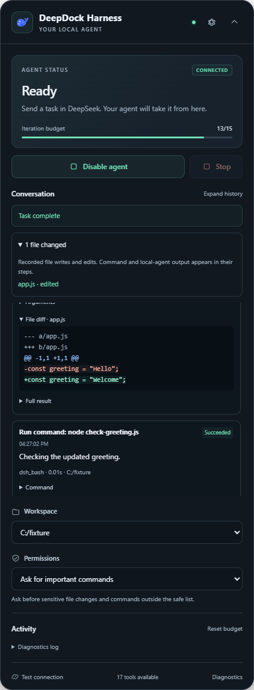

OPEN SOURCE. ON YOUR TERMS.
DeepSeek, meet
your workspace.
Your chat already understands the task. Give it the tools to do the work.
DeepDock Harness connects DeepSeek Chat to files, commands, Git, and GitHub on your computer—with visible progress and permissions you control.
Change the greeting to “Welcome” and run its check.
I’ll read the greeting, make the edit, and check the result.
app.jsHello → Welcomenode check-greeting.jsIllustrative walkthrough. No files or commands run from this page.
17 workspace tools
3 permission modes
1 task loop per conversation
Yours. The code, the controls, the workspace.
FROM CONVERSATION TO CHANGES
A short path
to actual work.
Keep using the DeepSeek conversation you know. The harness handles the bridge to your project.
- 01 / CHAT
Describe the task.
Use DeepSeek’s normal chat composer. The harness reads the response and validates its tool calls.
- 02 / CONNECT
Reach your workspace.
An authenticated bridge on
127.0.0.1runs tools within your configured project folder. - 03 / REVIEW
Follow what happens.
See tool explanations, results, file diffs, and approvals. Stop the task when you need to.
- 04 / CONTINUE
Keep the context.
Tool results return to the chat. Saved checkpoints let you explicitly resume unfinished work.
A COCKPIT FOR THE WORK
The next step
stays in view.
A compact panel beside your conversation. Enough context to understand the task, enough control to step in.
Approve at your pace.
Ask for important commands, ask every time, or choose full access. The saved permission mode is yours to set.
Recover deliberately.
Reloading offers Resume. An uncertain tool request pauses for review instead of silently replaying a change.
Go beyond files.
Inspect Git diffs, stage and commit changes, and publish to an explicit GitHub destination using your existing authentication.

A USEFUL TOOLBOX
Small tools.
Real capabilities.
File reads and edits, shell commands, Git workflows, and optional handoff to a separately installed local agent.
Browse. Read. Write. Edit. Search.
dsh_tree · dsh_read · dsh_write · dsh_edit · dsh_searchRun a check. Inspect the result.
dsh_bash · dsh_git_status · dsh_git_diff · dsh_logTake a change from local to published.
init · add · commit · remote · push · auth status · createPass on a self-contained plan.
dsh_handoff → separately configured dsh runtimeThe bridge publishes its live tool catalog. Handoff needs its own runtime and provider credentials.
GET YOUR WORKSPACE CONNECTED
A little setup.
Then, back to chat.
The browser extension and local bridge work together. Choose a download or build from source.
- Install the bridge and choose your project folder. It copies your pairing token to the clipboard.
- Extract the extension ZIP. Open
chrome://extensionsoredge://extensions, enable Developer mode, and choose Load unpacked. Select the extracted folder containingmanifest.json. - Open DeepSeek Chat. In the DeepDock Harness panel, open Settings and paste the token.
- Choose Test connection, then Enable agent. Send your task in the normal chat composer.
This is an unpacked extension release. No Chrome Web Store listing is required. The installer bundles Node.js; Git and GitHub CLI are optional for their respective tools.
Use Windows, Node.js 22.18 or newer, npm, and Chrome or Edge 120 or newer.
git clone https://github.com/houtanrocky/deepdock-harness.git
cd deepdock-harness
npm ci
npm run build
powershell -ExecutionPolicy Bypass -File scripts/pair.ps1Load .output/chrome-mv3/ as an unpacked extension. Open DeepSeek Chat, paste the copied token in Settings, test the connection, and enable the agent.
BEFORE YOU DOCK
A few useful details.
Where does my code go?
Tools execute on your computer through the loopback bridge. Relevant prompts, code, and tool results can be included in your DeepSeek conversation and are handled under DeepSeek’s own terms. DeepDock Harness operates no collection server and includes no analytics. See the privacy policy.
Do I need an API key?
The browser workflow uses your existing DeepSeek Chat session. Optional handoff to a local DeepSeek Harness agent requires that separate runtime and its provider credentials. A DeepSeek account and access to its models are not included.
What can the agent change?
The bridge’s file tools validate configured workspace boundaries. Your saved permission mode controls approval prompts. Full access permits unrestricted shell commands, and a local handoff uses that agent’s own policy, so choose the mode to suit your project.
Can I stop or resume a task?
Yes. Stop cancels the task loop, and reloading offers explicit Resume for unfinished work. Review your files after an interrupted request: the harness avoids automatic replay after an uncertain outcome, but exactly-once execution is not guaranteed.
Is this an official DeepSeek product?
No. DeepDock Harness is an independent MIT-licensed project. DeepSeek Chat can change its page layout; the extension includes diagnostics and selector overrides to help troubleshoot changes.

Your workspace.
Your next move.
Try the harness, read the code, or help shape what comes next.